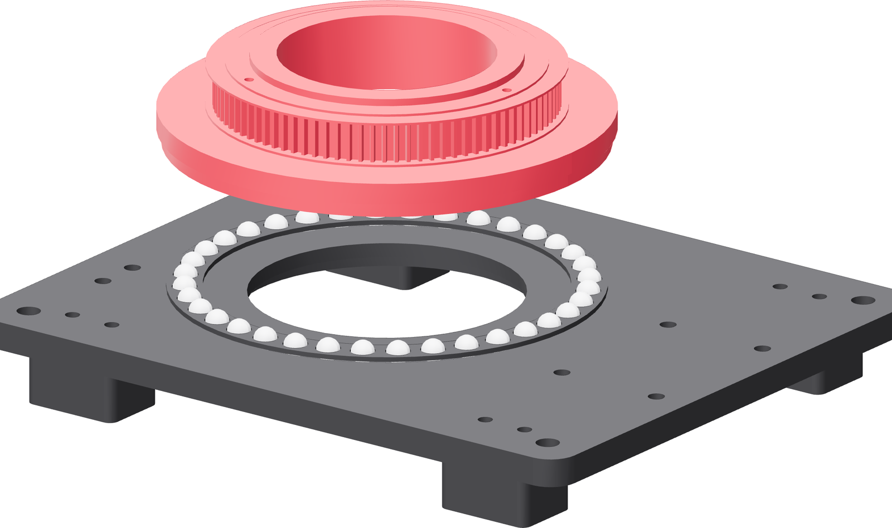

The turntable drive
The belt connects the purchased motor pulley to the pulley printed into the turntable. The motor carriage sets their separation.

The printed side
The pulley teeth and both flanges are integral to the turntable. Its flat underside is the print datum and the mounting face for the race ring and spool.
The race ring runs on the balls in the stationary base. The spool connects beneath the turntable through the base's center.
The motor side
The purchased pulley sits on the motor shaft. The motor and carriage move together along the tower rails to set belt tension.
The belt runs between the pulley flanges. Its spans pass clear of the tower and carriage throughout the available adjustment.